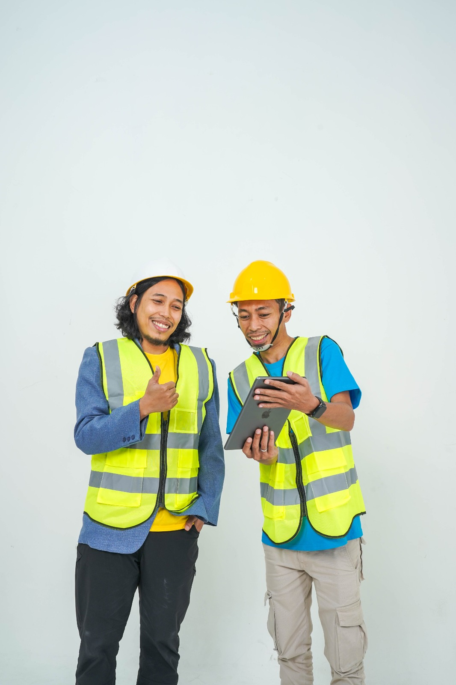

URUS PBG & SLF,
SKK & SBU KONSTRUKSI
Mudah, Cepat, & Terpercaya
Dapatkan layanan profesional untuk PBG, SLF, SKK, dan SBU tanpa perlu ribet.

 Sigap Membangun Negeri.png)

Dapatkan layanan profesional untuk PBG, SLF, SKK, dan SBU tanpa perlu ribet.
Persyaratan Bangunan Gedung (PBG) adalah izin yang menjadi dasar hukum bagi Anda untuk memulai pembangunan atau renovasi. Tanpa PBG, sebuah proyek konstruksi dapat dianggap ilegal. Namun, setelah pembangunan selesai, Anda masih memerlukan Sertifikat Laik Fungsi (SLF), yang merupakan dokumen penting yang menjamin bahwa bangunan telah memenuhi standar keselamatan, kenyamanan, dan kesehatan sebelum dapat digunakan secara resmi.
Legalitas & Kepastian Hukum
Jaminan Kesalamatan Bangunan
Nilai Tambah & kepercayaan Publik
Bangunan tidak di segel pemerintah
Persetujuan resmi sebelum membangun/merenovasi agar rencana bangunan sesuai ketentuan tata bangunan (online via SIMBG).
Sertifikat setelah bangunan selesai yang menyatakan bangunan layak digunakan, aman & memenuhi standar teknis (via SIMBG).
Sertifikat SKK & SBU Konstruksi wajib dimiliki agar tenaga kerja dan perusahaan konstruksi diakui resmi, profesional, dan kompetitif. Keduanya saling melengkapi: SKK untuk individu, SBU untuk badan usaha CV & PT.

Memperbesar peluang menang tender

Meningkatkan reputasi dan kredibilitas usaha

Mendukung keberlanjutan dan kepercayaan pasar

Memberi perlindungan hukum
SKK (Sertifikat Kompetensi Kerja) adalah bukti pengakuan kompetensi kerja tenaga kerja konstruksi.
Sertifikat untuk perusahaan jasa konstruksi sebagai bukti kompetensi & kemampuan usaha.
Semua proses dapat dilakukan 100% online. Jika ada dokumen yang belum lengkap, tim kami siap membantu melengkapinya.
Dokumen dasar untuk pengajuan PBG.
KTP
Foto KTP yang masih berlaku.
NPWP
Belum lengkap? Kami bantu siapkan gambar, pernyataan, dan cek kelayakan gratis.
Bicara dengan KonsultanRp25.000.000
Rp19.999.000
Izin dasar untuk memulai pembangunan atau renovasi bangunan.
Pesan SekarangRp4.000.000
Rp2.500.000
Bantuan untuk ujian sertifikasi SKK, tenaga ahli disiapkan oleh Klien.
Pesan SekarangRp5.500.000
Rp4.000.000
Bantuan untuk ujian sertifikasi SKK, tenaga ahli disiapkan oleh Klien.
Pesan SekarangRp9.000.000
Rp7.500.000
Layanan terima beres Sertifikat dengan tenaga ahli disiapkan oleh ALI.
Pesan SekarangRp10.500.000
Rp9.000.000
Layanan terima beres Sertifikat dengan tenaga ahli disiapkan oleh ALI.
Pesan SekarangAsosiasi Konstruksi
Rp4.500.000
Rp2.999.000
/ Sub Kelas KBLI KonstruksiTemukan jawaban untuk pertanyaan umum seputar PBG, SLF, SKK, dan SBU Konstruksi
PBG (Persetujuan Bangunan Gedung) adalah pengganti dari IMB (Izin Mendirikan Bangunan). PBG dikeluarkan melalui sistem OSS (Online Single Submission) dan SIMBG, sedangkan IMB adalah sistem lama. Fungsinya sama yaitu memberikan izin untuk membangun atau merenovasi bangunan.
Proses pengurusan SLF biasanya memakan waktu 14-30 hari kerja, tergantung kelengkapan dokumen dan kompleksitas bangunan. Dengan bantuan konsultan berpengalaman seperti ALI, proses dapat lebih cepat dan efisien.
Ya, berdasarkan UU No. 28 Tahun 2002 dan Permen PUPR, semua bangunan gedung wajib memiliki PBG sebelum pembangunan dan SLF setelah pembangunan selesai. Ini berlaku untuk bangunan komersial, industri, maupun hunian dengan kriteria tertentu.
Sanksi dapat berupa teguran tertulis, pembekuan kegiatan pembangunan, penyegelan bangunan, pembekuan sertifikat laik fungsi, atau bahkan pembongkaran bangunan. Selain itu, ada sanksi administrasi berupa denda dan kesulitan dalam mengurus utilitas seperti listrik dan air.
Untuk mendapatkan SKK, Anda perlu mengikuti ujian sertifikasi kompetensi di LSP (Lembaga Sertifikasi Profesi) terakreditasi. Persyaratan meliputi pendidikan minimal, pengalaman kerja, dan dokumen pendukung. ALI dapat membantu persiapan ujian dan menyediakan tenaga ahli bersertifikat.
SKK Jenjang 4 untuk lulusan SMA/SMK dengan pengalaman minimal 3 tahun, cocok untuk tenaga terampil. SKK Jenjang 6 untuk lulusan S1 Teknik dengan pengalaman minimal 2 tahun, cocok untuk tenaga ahli. Jenjang 6 memiliki kewenangan dan tanggung jawab yang lebih besar.
SBU berlaku selama 3 tahun dan dapat diperpanjang. Untuk perpanjangan, perusahaan harus memenuhi persyaratan seperti laporan realisasi pekerjaan, SDM bersertifikat yang masih berlaku, dan membayar iuran asosiasi. Proses perpanjangan lebih mudah dibanding pengurusan baru.
Konsultan berpengalaman memahami persyaratan teknis, proses birokrasi, dan update regulasi terbaru. Ini menghemat waktu, mengurangi risiko penolakan, dan memastikan dokumen sesuai standar. ALI telah menangani ribuan kasus dengan tingkat keberhasilan tinggi dan dukungan penuh hingga sertifikat terbit.
Baca apa kata mereka yang telah sukses mengurus perizinan konstruksi bersama kami.
"Proses cepat dan pelayanan sangat memuaskan!"
"Pelayanan Cepat, profesional, Mantap dan Fastrespon"
"Harga terjangkau, hasil memuaskan, sangat direkomendasikan."
"Pelayanan ramah, dokumen lengkap tepat waktu."
Silakan hubungi kami untuk mendapatkan konsultasi gratis harga spesial
© 2025 PT Akses Legal Indonesia. All rights reserved.